書く場所
ブラウザーのエディタ
インストールは要りません。スプレッドシートやドキュメントの「拡張機能」→「Apps Script」から、専用のエディタが開きます。
SCRIPT / DOCS / CALENDAR / WEB APP
 GASで、
GASで、
スプレッドシート、ドキュメント、カレンダー。
いつものGoogleサービスを、少しのJavaScriptでつなぎます。

01 / GASとは
Google Apps Script（GAS、ガス）は、Googleのサービスを操作するためのプログラムを書いて動かすしくみです。書き方はJavaScriptと同じで、Googleアカウントがあれば、ブラウザーだけで始められます。
書く場所
インストールは要りません。スプレッドシートやドキュメントの「拡張機能」→「Apps Script」から、専用のエディタが開きます。
動く場所
書いたコードは自分のPCではなく、Googleのサーバーで動きます。PCを閉じていても、決まった時刻に動かすこともできます。
つなげる相手
スプレッドシート、ドキュメント、カレンダー、Gmail、ドライブなど。SpreadsheetApp や CalendarApp のような名前の道具で操作します。
このページで作るもの
02 / 2つの型
GASのプログラム（プロジェクト）には、置き方が2種類あります。どちらも書き方は同じで、違うのは「どこから作るか」と「親になるファイルがあるか」です。
CONTAINER-BOUND
スプレッドシートやドキュメントなど、1つのファイル（コンテナ）にくっついたスクリプトです。そのファイルを開き、「拡張機能」→「Apps Script」で作ります。

STANDALONE
どのファイルにもくっつかず、ドライブに単独で置くスクリプトです。script.google.com で新しいプロジェクトを作るか、ドライブの「新規」→「その他」→「Google Apps Script」で作ります。

| くらべる点 | コンテナバインド型 | スタンドアロン型 |
|---|---|---|
| ドライブでの見え方 | ドライブには出てこない。親ファイルから開く | 1つのファイルとしてドライブに並ぶ |
| 親ファイルの操作 | getActiveSpreadsheet() などで、IDを書かずに親ファイルを扱える | 親がないので、openById() などでIDを指定して開く |
| メニュー・ダイアログ | getUi() で、親ファイルの画面にメニューやダイアログを足せる | ファイルの画面にメニューは足せない |
| ウェブアプリにする | できる | できる |
| 向いている用途 | 「このシート専用」「この文書専用」の便利機能 | 複数のファイルをまたぐ処理、ドライブの整理などの道具 |
覚えておくこと：コンテナバインド型は、あとから親ファイルと切り離せません。このページの作例は、すべてコンテナバインド型で作ります。
03 / 最初の実行と承認
GASが自分のドキュメントやカレンダーを操作するには、あなたの許可が必要です。初めて実行したとき（使う道具が増えたときも）に、承認を求める画面が続けて出ます。
実際のGoogle Apps Scriptで撮影しました（2026年10月24日）。個人情報は加工して隠しています。一部の画像では操作・確認する箇所を赤枠で示しています。画像を押すと大きく表示できます。
初めて関数を実行すると、この案内が出ます。「権限を確認」を押して、Googleの承認画面へ進みます。

「このアプリは Google で確認されていません」と出ることがあります。自分で作り、内容を理解したスクリプトであることを確認して「詳細」を開きます。

「詳細」を開くと、プロジェクトへの移動リンクが現れます。名前と内容を確認し、信頼できる自分のスクリプトの場合だけ進みます。

アプリ名と、何を見たり変えたりできるようになるかを読みます。必要な権限だと納得した場合だけ、画面の案内に沿って承認します。表示される権限やボタン名は、コードやアカウントによって変わります。

安全メモ：警告を進めてよいのは、自分で書いた、または中身を理解したスクリプトだけです。人から渡されたスクリプトや、知らない人のファイルに入っていたスクリプトは、権限の一覧を見て、むやみに許可しないでください。
途中でアカウント選択画面が表示された場合は、使用するGoogleアカウントを選びます。今回の撮影ではこの選択は省略されました。画面の文言や順番は、Googleの画面の更新で変わることがあります。練習画面では、この流れを簡略化して再現しています。
04 / ドキュメント × 入力フォーム
案内文やお礼状の書式はドキュメントで作り、変わる部分だけを {名前}・{日付}・{内容} にしておきます。メニューから右側の入力パネルを開き、入力した値を文書に差し込みます。
{名前}様
{日付}
{内容}
以下は実際のGoogleドキュメントで、掲載コードを使って操作・撮影した画面です（2026年10月24日）。緑の角丸枠はクリック・入力する場所です。画像を押すと大きく表示できます。日付はフォームでは「2026/10/24」、文書では「2026-10-24」と表示されます。
様 は目印の外に書きます。
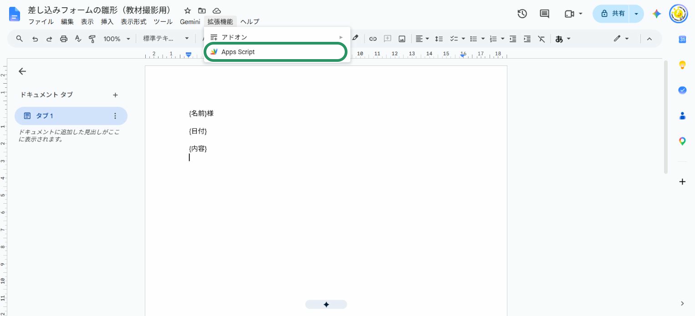
Code.gs（日本語表示では「コード.gs」）に、下の「Code.gs」のコードを貼ります。最初から入っているコードは、すべて置き換えます。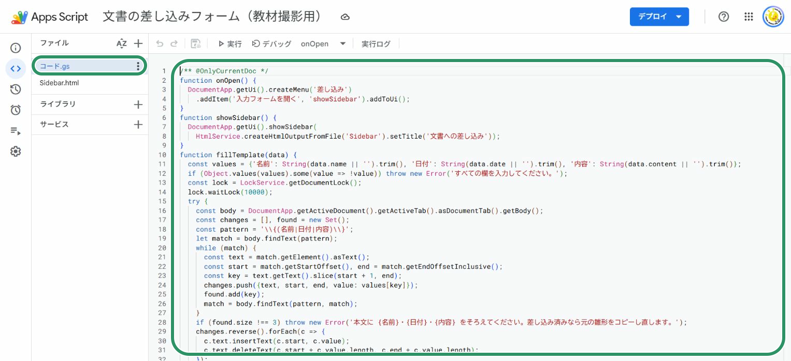
Sidebar にして、下の「Sidebar.html」のコードを貼ります。拡張子の .html は自動で付きます。最初から入っているHTMLは、すべて置き換えます。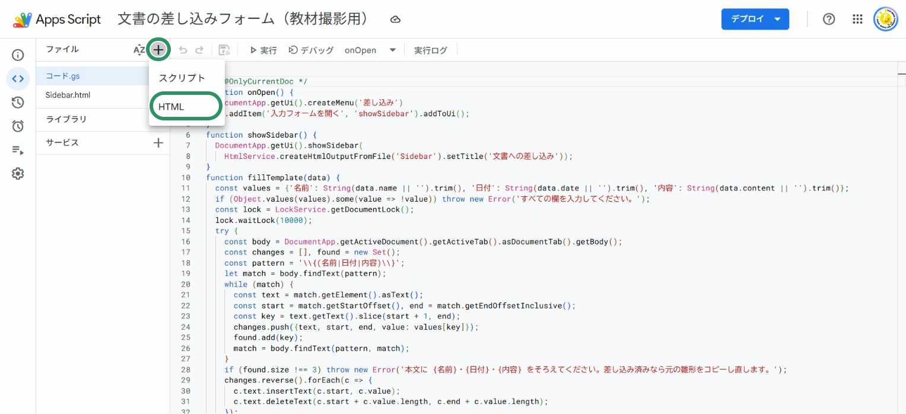
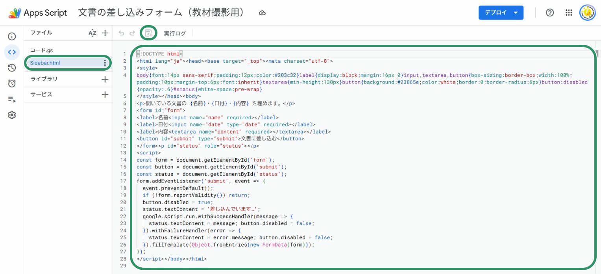
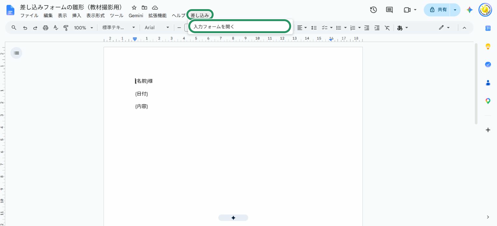

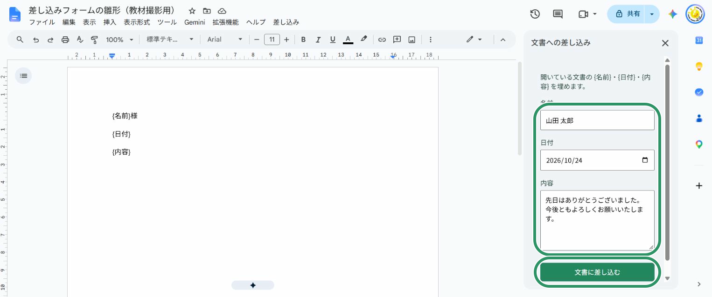
{名前}様 は「山田 太郎様」に変わります。この例にウェブアプリのデプロイは必要ありません。
/** @OnlyCurrentDoc */
function onOpen() {
DocumentApp.getUi().createMenu('差し込み')
.addItem('入力フォームを開く', 'showSidebar').addToUi();
}
function showSidebar() {
DocumentApp.getUi().showSidebar(
HtmlService.createHtmlOutputFromFile('Sidebar').setTitle('文書への差し込み'));
}
function fillTemplate(data) {
const values = {'名前': String(data.name || '').trim(), '日付': String(data.date || '').trim(), '内容': String(data.content || '').trim()};
if (Object.values(values).some(value => !value)) throw new Error('すべての欄を入力してください。');
const lock = LockService.getDocumentLock();
lock.waitLock(10000);
try {
const body = DocumentApp.getActiveDocument().getActiveTab().asDocumentTab().getBody();
const changes = [], found = new Set();
const pattern = '\\{(名前|日付|内容)\\}';
let match = body.findText(pattern);
while (match) {
const text = match.getElement().asText();
const start = match.getStartOffset(), end = match.getEndOffsetInclusive();
const key = text.getText().slice(start + 1, end);
changes.push({text, start, end, value: values[key]});
found.add(key);
match = body.findText(pattern, match);
}
if (found.size !== 3) throw new Error('本文に {名前}・{日付}・{内容} をそろえてください。差し込み済みなら元の雛形をコピーし直します。');
changes.reverse().forEach(c => {
c.text.insertText(c.start, c.value);
c.text.deleteText(c.start + c.value.length, c.end + c.value.length);
});
return '差し込みました。文書を確認してください。';
} finally { lock.releaseLock(); }
}
<!DOCTYPE html>
<html lang="ja"><head><base target="_top"><meta charset="utf-8">
<style>
body{font:14px sans-serif;padding:12px;color:#203c32}label{display:block;margin:16px 0}input,textarea,button{box-sizing:border-box;width:100%;padding:10px;margin-top:6px;font:inherit}textarea{min-height:130px}button{background:#23865e;color:white;border:0;border-radius:6px}button:disabled{opacity:.6}#status{white-space:pre-wrap}
</style></head><body>
<p>開いている文書の {名前}・{日付}・{内容} を埋めます。</p>
<form id="form">
<label>名前<input name="name" required></label>
<label>日付<input name="date" type="date" required></label>
<label>内容<textarea name="content" required></textarea></label>
<button id="submit" type="submit">文書に差し込む</button>
</form><p id="status" role="status"></p>
<script>
const form = document.getElementById('form');
const button = document.getElementById('submit');
const status = document.getElementById('status');
form.addEventListener('submit', event => {
event.preventDefault();
if (!form.reportValidity()) return;
button.disabled = true;
status.textContent = '差し込んでいます…';
google.script.run.withSuccessHandler(message => {
status.textContent = message; button.disabled = false;
}).withFailureHandler(error => {
status.textContent = error.message; button.disabled = false;
}).fillTemplate(Object.fromEntries(new FormData(form)));
});
</script></body></html>
onOpen() / showSidebar()google.script.runfillTemplate() に渡します。処理は非同期なので、成功・失敗の通知をそれぞれ受け取ります。使うたびに雛形をコピー：差し込むと目印は入力値に変わります。別の文書を作るときは元の雛形からコピーしてください。この例は現在開いているタブの本文（表の中も含む）が対象です。ヘッダー・フッター・他のタブは対象にしていません。各目印は途中で改行せず、ひと続きの文字として書きます。
05 / カレンダー ⇄ スプレッドシート
スプレッドシートのメニューから、カレンダーの予定を一覧にしたり、シートに書いた予定をまとめてカレンダーに登録したりします。
右側のパネルに、実行アカウントが所有・登録しているカレンダーを表示します。読み込み用と書き込み用を、それぞれ名前で選んで保存します。IDの手入力は不要です。
getEvents(開始, 終了) で期間内の予定をまとめて取り出し、1件1行でタイトル・日時・場所をシートに書き込みます。
シートの行を上から順に読み、予定IDが空の行をすべて createEvent() で登録します。作った予定のIDを各行に書き戻します。
読み込みも書き出しも、何行でもまとめて：読み込みは、今日から30日分の予定をすべて「読み込み」シートに1件1行で並べます。書き出しは、「書き出し」シートで予定IDが空の行をすべて、上から順に登録します。1行ずつ実行し直す必要はありません。
教材用のシートとカレンダーで実行・撮影しました（2026年10月24日）。緑の角丸枠が操作・確認する場所です。画像は押すと拡大でき、上の「元の画面に戻る」で閉じられます。
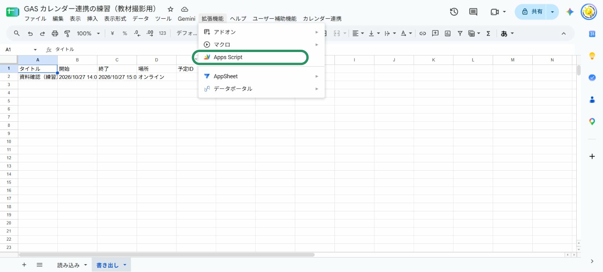
2-calendar-sheet/Code.gs のコードを、最初からあるコードとすべて置き換えて保存します。続いて左の「＋」→「HTML」で名前を CalendarSettings にし、下のCalendarSettings.html のコードをすべて貼り、保存します。拡張子の .html は自動で付きます。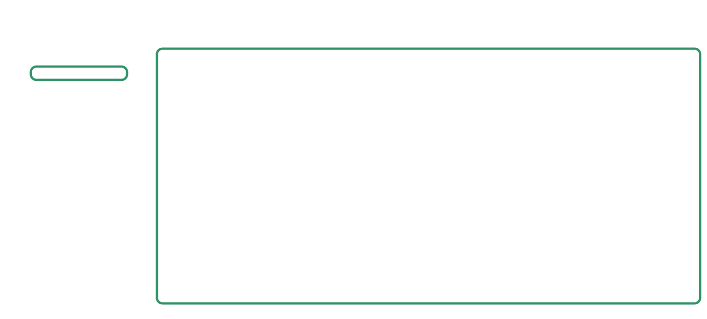

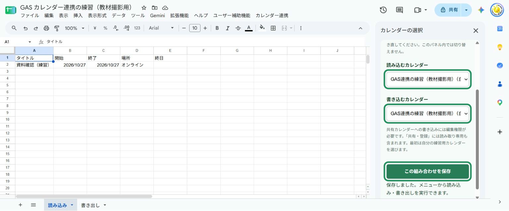
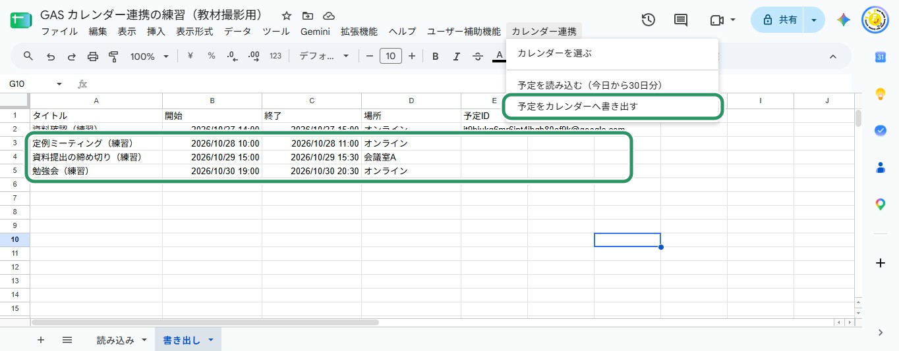
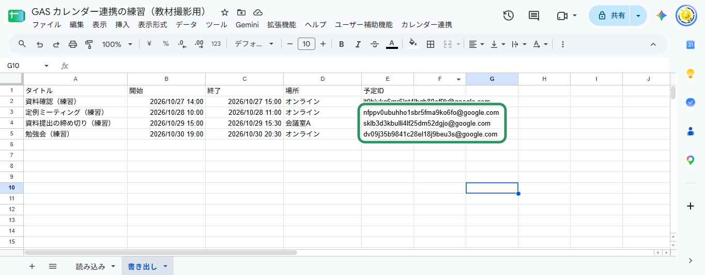
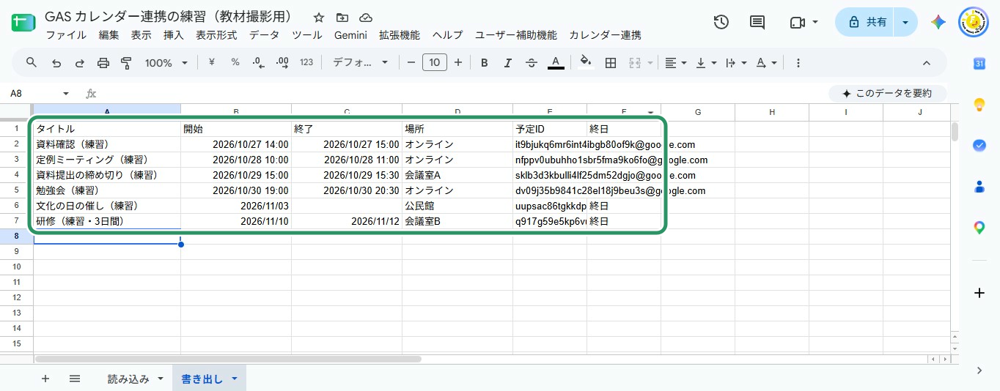
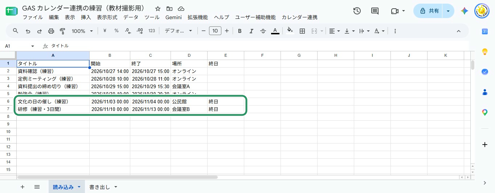
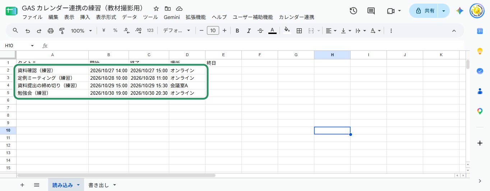
/**
* スプレッドシートに紐づけるカレンダー連携。
* Code.gs と HTML ファイル CalendarSettings を保存してシートを開き直す。
* Google側で使うアカウントを選び、「カレンダー連携」→「カレンダーを選ぶ」。
* IDの手入力は不要。選択内容はこのスクリプトの利用者ごとに保存する。
*/
function onOpen() {
SpreadsheetApp.getUi().createMenu('カレンダー連携')
.addItem('カレンダーを選ぶ', 'showCalendarSettings')
.addSeparator()
.addItem('予定を読み込む（今日から30日分）', 'importEvents')
.addItem('予定をカレンダーへ書き出す', 'exportEvents')
.addToUi();
}
function showCalendarSettings() {
SpreadsheetApp.getUi().showSidebar(
HtmlService.createHtmlOutputFromFile('CalendarSettings').setTitle('カレンダーの選択')
);
}
// 現在の実行アカウントが所有・登録しているカレンダーを取得する。
function getCalendarSettings() {
const props = PropertiesService.getUserProperties();
return {
calendars: CalendarApp.getAllCalendars().map(cal => ({
id: cal.getId(), name: cal.getName(), owned: cal.isOwnedByMe()
})),
importId: props.getProperty('importCalendarId') || '',
exportId: props.getProperty('exportCalendarId') || ''
};
}
function saveCalendarSettings(importId, exportId) {
const ids = CalendarApp.getAllCalendars().map(cal => cal.getId());
if (!ids.includes(importId) || !ids.includes(exportId)) {
throw new Error('両方のカレンダーを一覧から選んでください。');
}
PropertiesService.getUserProperties().setProperties({
importCalendarId: importId, exportCalendarId: exportId
});
return '保存しました。メニューから読み込み・書き出しを実行できます。';
}
function selectedCalendar_(key) {
const id = PropertiesService.getUserProperties().getProperty(key);
if (!id) throw new Error('先に「カレンダー連携」→「カレンダーを選ぶ」で保存してください。');
const calendar = CalendarApp.getCalendarById(id);
if (!calendar) throw new Error('選択したカレンダーにアクセスできません。選び直してください。');
return calendar;
}
// カレンダー → 「読み込み」シート。今日の0時から30日分。
function importEvents() {
const calendar = selectedCalendar_('importCalendarId');
const start = new Date();
start.setHours(0, 0, 0, 0);
const end = new Date(start);
end.setDate(end.getDate() + 30);
const rows = calendar.getEvents(start, end).map(ev => [
ev.getTitle(), ev.getStartTime(), ev.getEndTime(), ev.getLocation(),
ev.isAllDayEvent() ? '終日' : ''
]);
const book = SpreadsheetApp.getActiveSpreadsheet();
const sheet = book.getSheetByName('読み込み') || book.insertSheet('読み込み');
sheet.clearContents();
sheet.appendRow(['タイトル', '開始', '終了', '場所', '終日']);
if (rows.length) {
sheet.getRange(2, 1, rows.length, 5).setValues(rows);
sheet.getRange(2, 2, rows.length, 2).setNumberFormat('yyyy/mm/dd hh:mm');
}
book.setActiveSheet(sheet);
book.toast(rows.length + '件を読み込みました。', 'カレンダー連携');
}
function isDate_(value) {
return value instanceof Date && !isNaN(value.getTime());
}
// 「書き出し」シート → カレンダー。予定IDがある行は再登録しない。
// 列：タイトル | 開始 | 終了 | 場所 | 予定ID | 終日
// 「終日」の列に「終日」と書いた行は終日の予定にする。終了日を入れると、その日までの連日の予定になる。
function exportEvents() {
const lock = LockService.getDocumentLock();
if (!lock.tryLock(5000)) throw new Error('処理中です。少し待ってから実行してください。');
try {
const calendar = selectedCalendar_('exportCalendarId');
const book = SpreadsheetApp.getActiveSpreadsheet();
const sheet = book.getSheetByName('書き出し');
if (!sheet) throw new Error('「書き出し」シートを作り、予定を入力してください。');
const values = sheet.getDataRange().getValues();
for (let i = 1; i < values.length; i++) {
const [title, start, end, , eventId, allDay] = values[i];
if (!title || eventId) continue;
if (String(allDay).trim() === '終日') {
if (!isDate_(start) || (end !== '' && (!isDate_(end) || end < start))) {
throw new Error((i + 1) + '行目の開始を日付で入力し、終了日を入れるときは開始日以降にしてください。');
}
} else if (!isDate_(start) || !isDate_(end) || end <= start) {
throw new Error((i + 1) + '行目の開始・終了を日時で入力し、終了を開始より後にしてください。');
}
}
let count = 0;
for (let i = 1; i < values.length; i++) {
const [title, start, end, location, eventId, allDay] = values[i];
if (!title || eventId) continue;
const options = { location: String(location || '') };
let ev;
try {
if (String(allDay).trim() === '終日') {
// カレンダーの終日予定は「最終日の翌日」で終わるため、1日足して渡す
const startDay = new Date(start.getFullYear(), start.getMonth(), start.getDate());
const lastDay = isDate_(end) ? new Date(end.getFullYear(), end.getMonth(), end.getDate()) : startDay;
const endDay = new Date(lastDay);
endDay.setDate(endDay.getDate() + 1);
ev = calendar.createAllDayEvent(String(title), startDay, endDay, options);
} else {
ev = calendar.createEvent(String(title), start, end, options);
}
} catch (error) {
throw new Error((i + 1) + '行目を書き出せませんでした。書き込み権限を確認してください。詳細: ' + error.message);
}
sheet.getRange(i + 1, 5).setValue(ev.getId());
SpreadsheetApp.flush();
count++;
}
book.toast(count + '件を書き出しました。予定IDがある行はスキップします。', 'カレンダー連携');
} finally {
lock.releaseLock();
}
}<!DOCTYPE html>
<html lang="ja">
<head>
<base target="_top">
<meta charset="UTF-8">
<style>
body{font:14px/1.7 Arial,sans-serif;color:#173c25;margin:0;padding:18px;background:#f6faf8}
h2{font-size:19px;margin:0 0 16px}p{margin:8px 0 16px}
.account{padding:12px;background:#e2f6ea;border-left:5px solid #2c9164;border-radius:4px}
label{display:block;font-weight:bold;margin-top:20px}
select,button{width:100%;box-sizing:border-box;min-height:44px;border-radius:6px;font:inherit}
select{margin:8px 0;padding:8px;background:white;border:1px solid #9cb7a8}
button{padding:10px;border:0;background:#287c58;color:white;font-weight:bold;cursor:pointer;margin-top:18px}
button:disabled{opacity:.55;cursor:wait}.note{font-size:12px;color:#52695d}
#status{white-space:pre-wrap}#status.error{color:#a22}
</style>
</head>
<body>
<h2>カレンダーの選択</h2>
<p class="account"><strong>使用するGoogleアカウント</strong><br>このシートを開いて実行しているアカウント</p>
<p class="note">別のアカウントを使う場合は、そのアカウントだけでログインしたブラウザでシートを開き直してください。このパネル内では切り替えません。</p>
<form id="settings">
<label for="importId">読み込むカレンダー</label>
<select id="importId" required disabled><option value="">読み込み中…</option></select>
<label for="exportId">書き込むカレンダー</label>
<select id="exportId" required disabled><option value="">読み込み中…</option></select>
<p class="note">共有カレンダーへの書き込みには編集権限が必要です。「共有・登録」には読み取り専用も含まれます。最初は自分の練習用カレンダーを選びます。</p>
<button id="save" disabled>この組み合わせを保存</button>
</form>
<p id="status" role="status" aria-live="polite">カレンダー一覧を取得しています…</p>
<script>
const status = document.getElementById('status');
const button = document.getElementById('save');
function showError(error) {
status.className = 'error';
status.textContent = error.message || String(error);
}
google.script.run.withSuccessHandler(data => {
['importId', 'exportId'].forEach(key => {
const select = document.getElementById(key);
select.replaceChildren(new Option('カレンダーを選んでください', ''));
data.calendars.forEach(cal => select.add(new Option(
cal.name + (cal.owned ? '（自分）' : '（共有・登録）'), cal.id
)));
select.value = data[key];
select.disabled = false;
});
button.disabled = data.calendars.length === 0;
status.textContent = data.calendars.length ? '読み込み先と書き込み先を選んで保存してください。' : '利用できるカレンダーがありません。Googleカレンダーを確認してください。';
}).withFailureHandler(showError).getCalendarSettings();
document.getElementById('settings').addEventListener('submit', event => {
event.preventDefault();
button.disabled = true;
status.className = '';
status.textContent = '保存しています…';
google.script.run.withSuccessHandler(message => {
button.disabled = false;
status.textContent = message;
}).withFailureHandler(error => {
button.disabled = false;
showError(error);
}).saveCalendarSettings(document.getElementById('importId').value, document.getElementById('exportId').value);
});
</script>
</body>
</html>書き出しを2回押すと、同じ予定が二重に登録されてしまいます。作った予定のIDを「予定ID」の列に書き戻し、IDが入っている行は飛ばすようにしています。
エディタ左の「トリガー」から時間主導型のトリガーを足すと、「毎朝7時に読み込む」のように自動で動かせます。1日に作れる予定の数など、使える量には上限があります。
06 / GASでWeb APIを作る
GASのプロジェクトは、ウェブアプリとして公開できます。URLにアクセスがあると決まった関数が動き、シートのデータをJSONで返したり、送られてきたデータをシートに書き込んだりできます。APIそのものの考え方は、APIのしくみを体験しようで紹介しています。
GETで呼ばれたら
doGet(e)ブラウザーでURLを開いたときや、fetch(URL) で呼ばれたときに動きます。URLの ?id=3 のような値は e.parameter に入ります。
POSTで呼ばれたら
doPost(e)フォームなどからデータを送られたときに動きます。送られてきた本文は e.postData.contents に文字列で入ります。
返すもの
ContentServicecreateTextOutput(JSON.stringify(データ)) に setMimeType(ContentService.MimeType.JSON) を付けて、JSONとして返します。
教材用のスプレッドシートに作例Aのコードを入れ、実際にデプロイして撮影しました（2026年10月24日）。緑の角丸枠が操作・確認する場所です。画像は押すと拡大でき、上の「元の画面に戻る」で閉じられます。
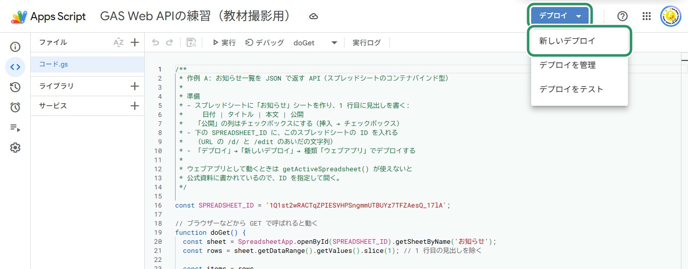
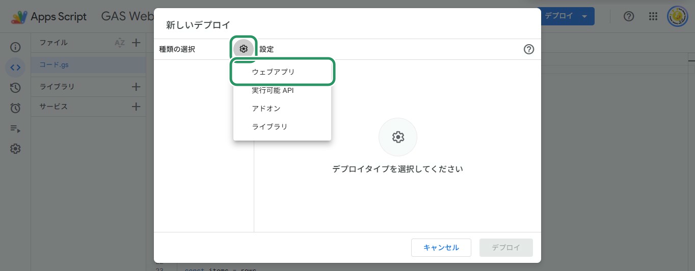
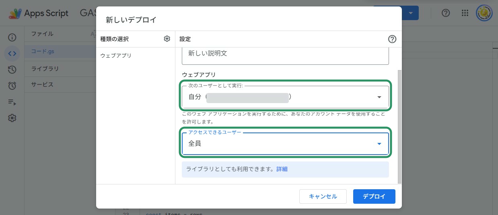
/exec で終わるURLが表示されます。作例では、このURLを画面側のコードに貼ります。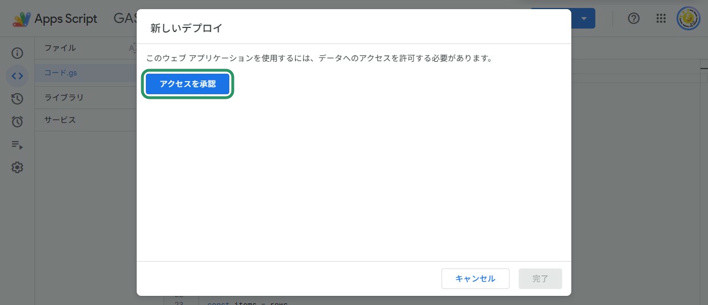
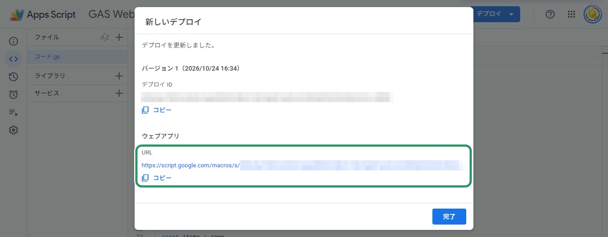
/exec で終わるウェブアプリのURLが表示されます。デプロイIDとURLの固有部分はモザイクにしています。| 設定 | 選べるもの | 意味 |
|---|---|---|
| 次のユーザーとして実行 | 自分 | 誰がアクセスしても、デプロイした自分の権限で動く。シートを読み書きするのは自分のアカウント |
| アクセスしているユーザー | アクセスした人の権限で動く。その人にも承認の画面が出る | |
| アクセスできるユーザー | 自分のみ | デプロイした本人だけが使える |
| Googleアカウントを持つ全員 | Googleにログインしている人なら使える | |
| 全員 | ログインしていない人も含めて、URLを知っていれば誰でも使える |
ウェブアプリでは「アクティブなファイル」がない：公式資料では、ウェブアプリとして動くときは getActiveSpreadsheet() などが使えないとされています。作例では、スプレッドシートのID（URLの /d/ と /edit のあいだの文字列）を書き、SpreadsheetApp.openById() で開きます。
07 / 作例A ― 読むだけ（GET）
スプレッドシートに書いたお知らせのうち、「公開」にチェックを入れたものだけを、Webページに一覧表示します。お知らせを直したいときは、シートを書き換えるだけです。
| A 日付 | B タイトル | C 本文 | D 公開 | |
|---|---|---|---|---|
| 2 | 2026/10/14 | 秋の勉強会のお知らせ | 10月25日に開きます。 | ✓ |
| 3 | 2026/10/16 | 資料を公開しました | 第3回のスライドです。 | ✓ |
| 4 | 2026/10/17 | （下書き）次回の日程 | 調整中 |
const SPREADSHEET_ID = 'ここにスプレッドシートのIDを入れる';
function doGet() {
const sheet = SpreadsheetApp.openById(SPREADSHEET_ID)
.getSheetByName('お知らせ');
const rows = sheet.getDataRange().getValues().slice(1);
const items = rows
.filter((row) => row[3] === true) // 公開にチェック
.map((row) => ({
date: Utilities.formatDate(new Date(row[0]), 'Asia/Tokyo', 'yyyy-MM-dd'),
title: String(row[1]),
body: String(row[2]),
}));
return ContentService
.createTextOutput(JSON.stringify({ items: items }))
.setMimeType(ContentService.MimeType.JSON);
}// デプロイで表示された /exec で終わるURL
const API_URL = 'https://script.google.com/macros/s/…/exec';
async function load() {
const res = await fetch(API_URL);
const data = await res.json();
data.items.forEach((item) => {
const li = document.createElement('li');
li.textContent = item.date + ' ' + item.title;
document.getElementById('list').append(li);
});
}
load();GASが返すJSON
{
"items": [
{ "date": "2026-10-14", "title": "秋の勉強会のお知らせ", "body": "10月25日に開きます。" },
{ "date": "2026-10-16", "title": "資料を公開しました", "body": "第3回のスライドです。" }
]
}画面に出る一覧
チェックを入れていない「（下書き）次回の日程」は、JSONに入りません。見せたくないデータは、GASの側で外してから返します。
教材用のスプレッドシートで作例Aを実際に動かして撮影しました（2026年10月24日）。緑の角丸枠が操作・確認する場所です。画像は押すと拡大でき、上の「元の画面に戻る」で閉じられます。
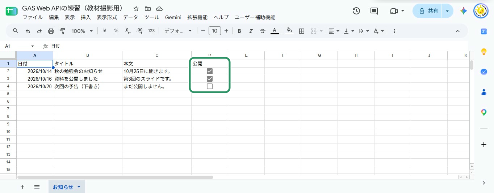
3-notice-api/Code.gs を貼ります。SPREADSHEET_ID の '' の中に、このスプレッドシートのID（アドレス欄の /d/ と /edit のあいだの文字列）を入れて保存します。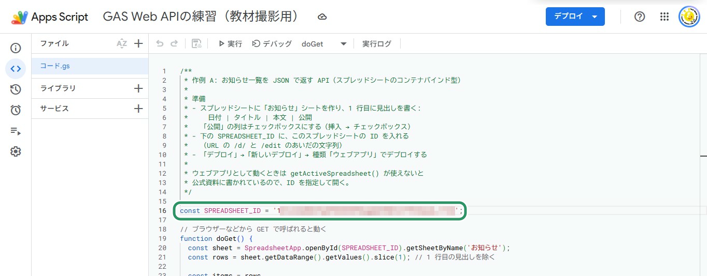
SPREADSHEET_ID にスプレッドシートのIDを入れて保存します。IDはモザイクにしています。/exec で終わるURLが表示されるので、「コピー」を押します。/exec で終わるウェブアプリのURLをコピーします。デプロイIDとURLの固有部分はモザイクにしています。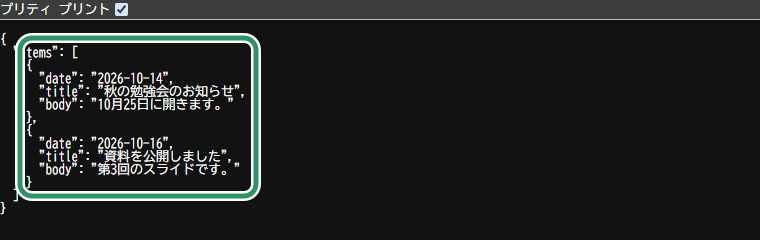
5-local-server フォルダーにある「ここにHTMLを置く」の notice.html をメモ帳で開き、const API_URL = ''; の '' にURLを貼って保存します。続けて「サーバーを起動（Windows）.bat」をダブルクリックすると、黒い画面が開き、ブラウザーで http://localhost:8000/ が開きます。Macは「サーバーを起動（Mac）.command」を使います。詳しい手順は同梱の「使い方.txt」にあります。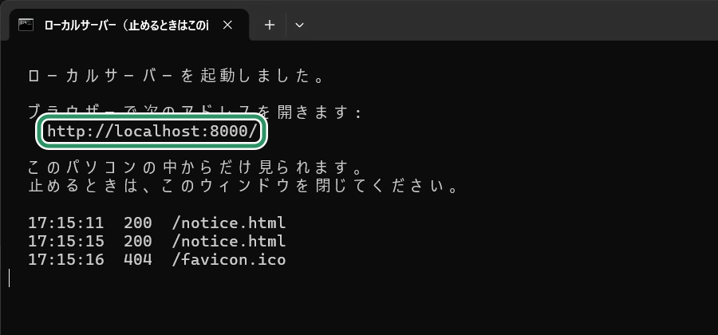
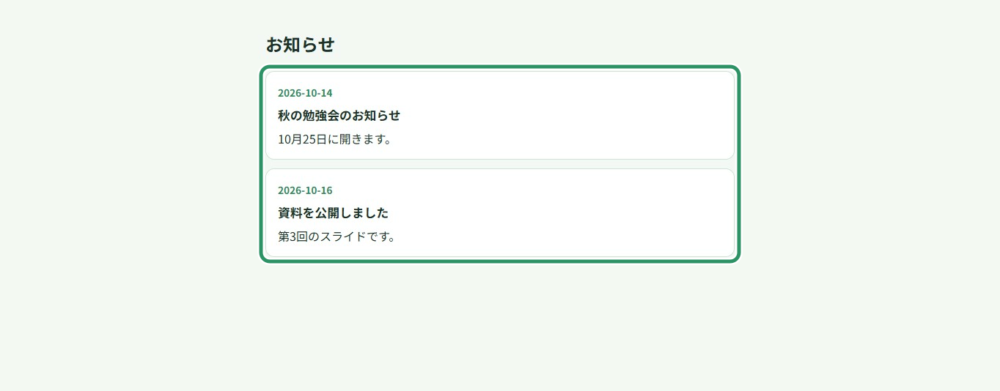
notice.html がGASのURLを呼び、お知らせを一覧にします。HTMLはサーバーから開く：HTMLファイルをダブルクリックで直接開くと、ブラウザーの安全のしくみによって読み込みに失敗することがあります。サンプルに同梱したローカルサーバー（WindowsはPowerShell、MacはPython 3で動き、追加のインストールはいりません）を使うか、ご自身が契約しているレンタルサーバーなどにHTMLをアップロードして開いてください。同梱のローカルサーバーは、そのパソコンの中からしか見られません。
デプロイしたウェブアプリのURLを入れて「読み込む」を押すと、notice.html と同じ処理でお知らせを一覧にします。入力したURLへ実際にアクセスします（読み取るだけで、シートは変わりません）。URLはどこにも保存しません。
08 / 作例B ― 書き込む（POST）
HTMLのフォームで名前と出欠を送ると、GASが受け取って「出欠」シートの最後の行に書き足します。集計はスプレッドシートでそのまま行えます。
function doPost(e) {
const data = JSON.parse(e.postData.contents);
// 受け取った値は、そのまま信じずに確かめる
const name = clean(data.name, 40);
const answer = ['出席', '欠席', '未定'].includes(data.answer) ? data.answer : '';
if (!name || !answer) {
return json({ ok: false, message: '名前と出欠を入れてください。' });
}
SpreadsheetApp.openById(SPREADSHEET_ID).getSheetByName('出欠')
.appendRow([new Date(), name, answer, clean(data.comment, 200)]);
return json({ ok: true, message: '受け付けました。' });
}
// = + - @ で始まる値は、数式にならないよう ' を付ける
function clean(value, max) {
const text = String(value || '').trim().slice(0, max);
return /^[=+\-@]/.test(text) ? "'" + text : text;
}
function json(obj) {
return ContentService.createTextOutput(JSON.stringify(obj))
.setMimeType(ContentService.MimeType.JSON);
}const res = await fetch(API_URL, {
method: 'POST',
// Content-Type は付けない（text/plain で送られる）
body: JSON.stringify({ name, answer, comment }),
});
const data = await res.json();
result.textContent = data.message;出欠フォーム
名前山田 花子
出席欠席未定
送信する
山田 花子 さんの「出席」を受け付けました。
application/json を付けると、ブラウザーは本番の前に「送ってよいか」を確かめるリクエスト（プリフライト）を送ります。GASのウェブアプリが受け付けるのは doGet と doPost だけなので、この確認に応えられません。text/plain のままなら確認は送られず、本文のJSONは JSON.parse で読めます。
「全員」に公開したURLは、画面を通さなくても呼べます。長さや選択肢をGASの側で確かめ、数式として扱われる値を防いでいます。大事な用途では、Googleフォームなどの専用のしくみも検討してください。
教材用のスプレッドシートで作例Bを実際に動かして撮影しました（2026年10月24日）。緑の角丸枠が操作・確認する場所です。フォームの名前は説明用の架空の名前です。
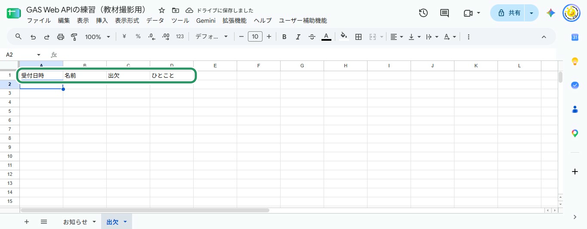
4-attendance-api/Code.gs を貼り、SPREADSHEET_ID にこのスプレッドシートのIDを入れて保存します。送られたデータは doPost で受け取ります。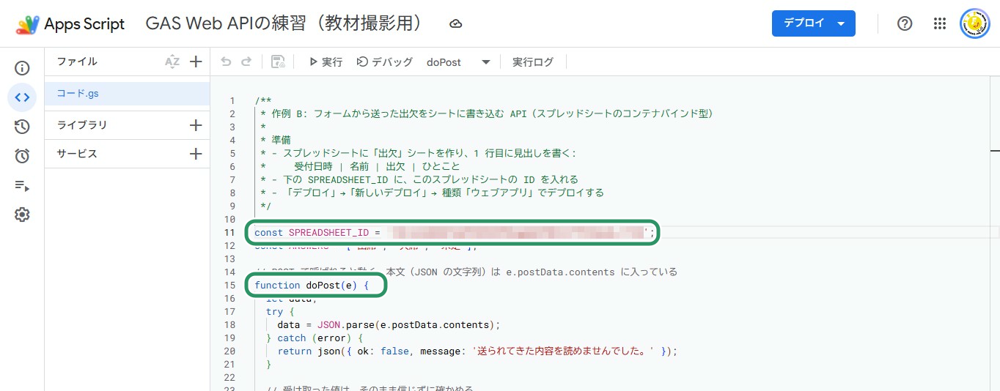
doPost が動きます。IDはモザイクにしています。/exec で終わるURLをコピーします。作例Aとは別のURLになります。attendance.html の API_URL にURLを貼って保存し、ローカルサーバーを起動します。入口のページから「作例B：出欠フォーム」を開き、名前・出欠・ひとことを入れて「送信する」を押します。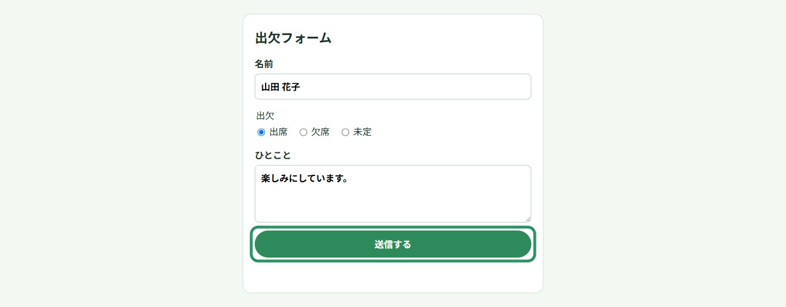
message が、フォームの下に表示されます。入力欄は空に戻ります。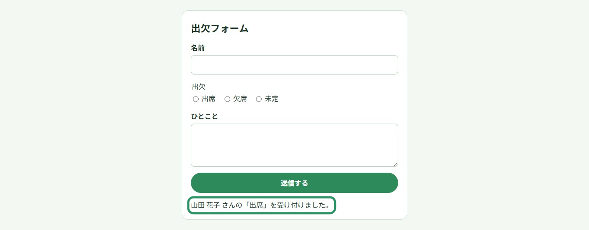
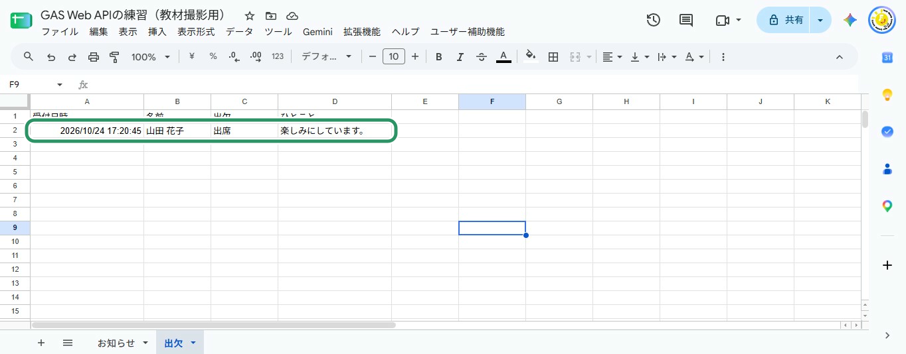
09 / 公開するときの注意
「全員」に公開すると、URLを知っている人は誰でもAPIを呼べます。名前やメールアドレスなどの個人情報は、返すデータに入れないでください。
公開中のURLは、デプロイしたときのバージョンで動きます。コードを直したら「デプロイ」→「デプロイを管理」→ 編集で新しいバージョンを選ぶと、同じURLのまま更新できます。
無料のGoogleアカウントでは、1回の実行は6分まで、カレンダーの予定作成は1日5,000件まで、などの上限があります。上限は変わることがあるので、公式資料で確かめてください。
「デプロイをテスト」の /dev で終わるURLは、編集できる人だけが開け、保存した最新のコードで動きます。人に渡すのは /exec のURLです。
10 / サンプル
ドキュメントの差し込みフォーム（Code.gs・Sidebar.html）、カレンダー連携、作例A・Bの Code.gs と index.html が入っています。準備と使い方は同梱の README.txt で確認できます。index.html は、API_URL に自分のウェブアプリのURLを入れてから開きます。
5-local-server フォルダーには、作例のHTMLを自分のパソコンで開くためのローカルサーバー（Windows用の .bat と Mac用の .command）と、手順を書いた「使い方.txt」が入っています。追加のソフトのインストールはいりません。
公式資料を確認：2026年10月18日
承認画面の撮影・確認：2026年10月24日。Google Apps Script：Googleサービスの承認。このページの実画面は教材撮影用プロジェクトで取得し、個人情報のマスクと、操作箇所を示す枠を追加しています。カレンダー連携の実行・権限説明も2026年10月24日に確認しました。
カレンダー選択方式の確認：2026年10月24日。利用可能なカレンダーの取得 ／ 利用者ごとの設定保存 ／ 複数アカウントでの実行に関する注意
差し込みフォームの確認：2026年10月24日。公式：ダイアログとサイドバー ／ HTMLとGASの通信 ／ 本文の文字検索
ローカルサーバーの確認：2026年10月24日。Microsoft Learn：HttpListener クラス（Windows用） ／ Python ドキュメント：http.server（Mac用）。どちらも手元での確認用で、本番の公開には使いません。
メニューやボタンの日本語の表記は、公式資料の英語の表記をもとにした訳で、実際の画面と違うことがあります。ページ内の日付、名前、お知らせ、URLは説明用の例です。